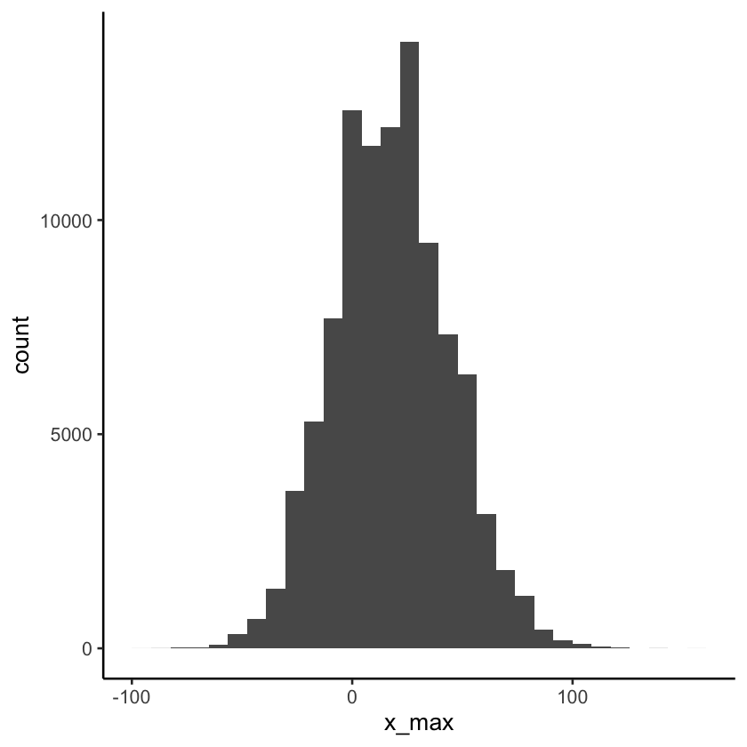
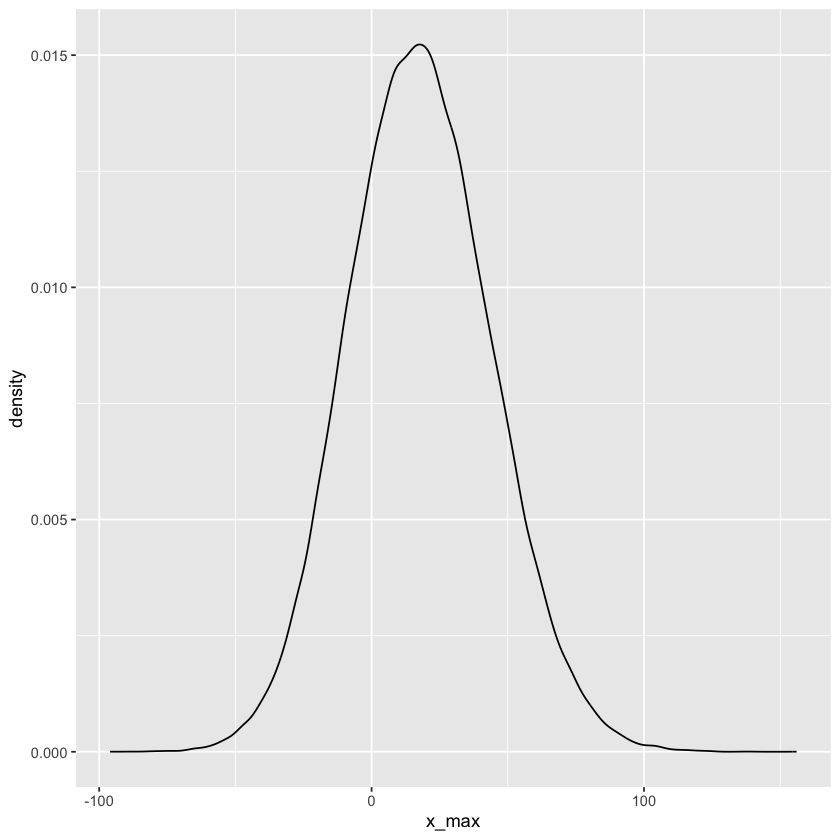

If you are trying to edit this notebook in Colab, you’ll also want to make sure to run the following code cell, which will install some global functions that we use in the course: mainly the dsan_theme() function, which just ensures that the plots you create have a standardized theme, (making it easier for us and the TAs to quickly understand what’s going on in your plots)
If the dsan_theme() function still gives you trouble after running this, no worries. You can just comment out dsan_theme() anywhere you see it, and use the default ggplot2 theme instead.
if (Sys.getenv('COLAB_RELEASE_TAG') !='') {writeLines("Colab detected: sourcing DSAN R globals")library(devtools)source_url('https://raw.githubusercontent.com/jpowerj/dsan5100-03/main/_globals.r')} else {writeLines("No Colab environment detected")source("../../_globals.r")}
No Colab environment detected
Here, to prepare you for Lab 4, I’m going to walk you through generating data from a distribution via simulation, and then analyzing properties of this data (and therefore, if the data is sufficiently representative, properties of the distribution) by computing new pieces of information on the basis of the original data. Hopefully this helps drive the point home that probability distributions like the Normal distribution that we’ll look at in this case are not arbitrarily, pulled out of thin air or out of the brain of some imaginative mathematician. Rather, they
arise naturally out of patterns that we see in nature, and/or
allow us to “encode” the information we have about the world as a distribution in some principled way.
In the latter case, I say ‚Äúprincipled‚Äù in the sense that: we can ‚Äúencode‚Äù information we have at some point in time as a particularly-suitable distribution and then, when we learn new information, we can update this distribution to reflect the new information, using Bayes‚Äô rule üßê‚ĺÔ∏èüßê.
The Drunkard’s Walk
In class today I described one of the many Data Generating Processes that could give rise to normally-distributed data. It involved a simple random walk, where you imagine a person on a numberline at the point \(x = 0\), and then imagine them flipping a coin repeatedly: when the coin comes up Tails, they move 1 unit to the left, and when the coin comes up Heads they move 1 unit to the right. This stochastic process can be visualized via the following diagram[^drunkard]:
Here we can think of the “layers” (the vertical columns) in the diagram as representing the branching possibilities in each step: at time \(t = 0\), before any coin flips have been carried out, there is only one possible state of the system: the person is at the point \(x = 0\).
After a single time step, at time \(t = 1\), there are now two possible states of the system: if the (single) coin flip came up Tails the person is at \(x = -1\), and if it came up Heads the person is at \(x = 1\).
Hopefully some general aspects and mathematical properties of this stochastic process immediately stand out:
There are two ways we could describe a given state of this system at a time \(t\):
First, we could describe the history of all choices that led to the current state: the node at the top of the \(t = 2\) column, for example, could be represented as a vector \((L, L)\), corresponding to the fact that the person ended up at this state by moving left, then moving left again.
Alternatively, we could choose to only keep track of the person’s position on the number line, dropping the information about their history (how they got there). If we choose this option, the state can be described by a single number: the \(x\) coordinate of where the person is located at that time.
Notice how this second option “collapses” some of the nodes in the diagram down into a single state: for example, the three history vectors \(()\) (the vector corresponding to the start node, where no moves have been made yet), \((L,R)\) and \((R,L)\), which are three different states under the first option, both represent the single state \(x = 0\) if we use this option.
The number of possible states (nodes) at each time step \(t\) is just \(2^t\). This comes from our multiplication rule from earlier in the semester: if we’re making \(n\) choices, where each choice involves choosing between \(k\) alternatives, the total number of choice vectors (decisions for all \(n\) choices) is \(k^n\). Here we’re making \(t\) choices (one at each time step), choosing between \(2\) alternatives each time (going left vs. going right), giving \(2^t\) total choice vectors.
Now that we have an idea of some of the mathematical properties of this system, let’s focus in on converting this into code!
First things first, we make sure to use R’s set.seed() function to ensure reproducibility of our results across different runs of the notebook:
set.seed(5100)
Your first intuition might be to create a variable x to keep track of the state, then create a loop that will run N times, updating the state each time through the loop. In data science world, it turns out that this approach is very inefficient (in terms of memory usage but also, more importantly, in terms of the time it will take to run the simulation). But, let’s start with that and work our way towards the more efficient solution.
For concreteness, let’s try to simulate a person following this procedure for N = 10 steps, where each coin flip is with a fair coin, with \(\Pr(H) = 0.5\). I am forever infinitely mad about the fact that R does not come with built-in support for the Bernoulli distribution (literally the distribution that every single other possible discrete distribution is built on top of…), so instead of using dbinom() incorrectly like I did in class, I am instead going to import the Rlab library, which adds in functions like dbern(), rbern(), etc., that are bafflingly absent from base-R:
library(Rlab)t <-0x <-0writeLines(paste0("Starting state (t = ",t,"): x = ",x))for (i inseq(from =1, to =10)) {writeLines(paste0("=====[ Step ",i," ]====="))# Flip coin flip_outcome <-rbern(1,0.5)writeLines(paste0("Coin flip outcome: ",flip_outcome))# Choose direction based on result direction <-""if (flip_outcome ==0) {# Outcome = Tails direction <-"Left" x <- x -1 } else {# Outcome = Heads direction <-"Right" x <- x +1 }# And increment the time counter t <- t +1writeLines(paste0("Moved ",direction))writeLines(paste0("New state (t = ",t,"): x = ",x))}# # Unique id for each person# pid <- seq(1, num_people)# pid_tib <- tibble(pid)# pos_df <- tibble()# end_df <- tibble()# all_steps <- t(replicate(num_people, sample(support, num_steps, replace = TRUE, prob = c(0.5, 0.5))))
Rlab 4.0 attached.
Attaching package: 'Rlab'
The following objects are masked from 'package:stats':
dexp, dgamma, dweibull, pexp, pgamma, pweibull, qexp, qgamma,
qweibull, rexp, rgamma, rweibull
The following object is masked from 'package:datasets':
precip
Starting state (t = 0): x = 0
=====[ Step 1 ]=====
Coin flip outcome: 1
Moved Right
New state (t = 1): x = 1
=====[ Step 2 ]=====
Coin flip outcome: 0
Moved Left
New state (t = 2): x = 0
=====[ Step 3 ]=====
Coin flip outcome: 0
Moved Left
New state (t = 3): x = -1
=====[ Step 4 ]=====
Coin flip outcome: 0
Moved Left
New state (t = 4): x = -2
=====[ Step 5 ]=====
Coin flip outcome: 1
Moved Right
New state (t = 5): x = -1
=====[ Step 6 ]=====
Coin flip outcome: 0
Moved Left
New state (t = 6): x = -2
=====[ Step 7 ]=====
Coin flip outcome: 0
Moved Left
New state (t = 7): x = -3
=====[ Step 8 ]=====
Coin flip outcome: 0
Moved Left
New state (t = 8): x = -4
=====[ Step 9 ]=====
Coin flip outcome: 0
Moved Left
New state (t = 9): x = -5
=====[ Step 10 ]=====
Coin flip outcome: 1
Moved Right
New state (t = 10): x = -4
Technically, this code is sufficient to carry out our whole simulation, if we didn’t care about memory/time considerations. For example, we could use it to write a slow_simulation function, that takes in num_steps as its argument, simulates this many steps of the process, and returns the resulting state. To avoid the function printing out all of the above information 100 times, which will make things run even more slowly, I will also add a verbose argument that is set to FALSE by default. This is good practice in some cases, software-engineering-wise, since if something goes wrong during a call to the function we can re-run the function with verbose set to be TRUE and see the same type of info we printed out above.
slow_simulation <-function(num_steps, verbose =FALSE) { t <-0 x <-0if (verbose) {writeLines(paste0("Starting state (t = ",t,"): x = ",x)) }for (i in1:num_steps) {if (verbose) {writeLines(paste0("=====[ Step ",i," ]=====")) }# Flip coin flip_outcome <-rbern(1,0.5)if (verbose) {writeLines(paste0("Coin flip outcome: ",flip_outcome)) }# Choose direction based on result direction <-""if (flip_outcome ==0) {# Outcome = Tails direction <-"Left" x <- x -1 } else {# Outcome = Heads direction <-"Right" x <- x +1 }# And increment the time counter t <- t +1if (verbose) {writeLines(paste0("Moved ",direction))writeLines(paste0("New state: x = ",x)) } }return(x)}
It is usually good practice, once you’ve written a function like this, to test that it works for the simplest “corner cases” or “base cases”: in this case, for example, we should quickly verify that it always produces the expected output \(x = 0\) when we ask it for the result of the process after zero steps:
replicate(10, slow_simulation(0))
0
0
-2
0
0
-2
0
0
-2
-2
And alas, we have already found a bug in our implementation! It turns out that, unlike in Python or most other programming languages, using just the colon operator (:) can lead to some terrifying bugs,since if the number after the : is less than the number before the :, R will just start iterating backwards from the first number down to the second number:
5:-3
5
4
3
2
1
0
-1
-2
-3
This may seem inocuous, until you try to write a function like this which loops a specific number of times, and you try to support the case of running zero times. For example, if you use 1:n, and you accept n as an argument to your function, you’ll get a case like the following:
n <-01:n
1
0
The takeaway is: if we want to be fully careful, and we want to make sure our function also produces the correct answer for zero steps, then we need to use R’s seq_len() function! seq_len(N) can be used in a loop to ensure that R loops over a sequence from 1 to N, and always counts up, so we avoid this case:
slow_simulation <-function(num_steps, verbose =FALSE) { t <-0 x <-0if (verbose) {writeLines(paste0("Starting state (t = ",t,"): x = ",x)) }for (i inseq_len(num_steps)) {if (verbose) {writeLines(paste0("=====[ Step ",i," ]=====")) }# Flip coin flip_outcome <-rbern(1,0.5)if (verbose) {writeLines(paste0("Coin flip outcome: ",flip_outcome)) }# Choose direction based on result direction <-""if (flip_outcome ==0) {# Outcome = Tails direction <-"Left" x <- x -1 } else {# Outcome = Heads direction <-"Right" x <- x +1 }# And increment the time counter t <- t +1if (verbose) {writeLines(paste0("Moved ",direction))writeLines(paste0("New state: x = ",x)) } }return(x)}
Re-running our tests, to make sure it works as expected now even in the N = 0 case, we get:
replicate(10, slow_simulation(0))
0
0
0
0
0
0
0
0
0
0
There may still be issues, but now let’s use this function to find the state of the system after N = 100 steps (we’ll run it 3 times here, just to show how it can produces different outcomes each time it is re-run)
slow_simulation(100)
6
slow_simulation(100)
-20
slow_simulation(100)
-6
And we see that, repeating the process 4 times, the random-walker ended up at \(x = -20\), \(x = 2\), and \(x = -2\) after 100 steps. From this (or from intuition from the diagram, or from thinking about the process in general), we could infer another fact: that the random-walker will end up at an even-numbered coordinate if they take an even number of steps (including 0 steps). By similar reasoning, if we run the process for an odd number of steps, the random-walker will end up on an odd-numbered coordinate (here we run for a few even and odd values, so you can start to see this general pattern):
slow_simulation(7)
1
slow_simulation(8)
2
slow_simulation(9)
1
slow_simulation(11)
-1
slow_simulation(13)
1
Here we have to pause, because we have to take into account the fact that we really want to simulate this process for a large number of people, and a large number of steps, so that this loop-based approach is going to become super slow and unwieldy as we increase the number of people/steps.
So, let’s think about how we could speed it up. Honestly, this can often be more of an art than a science, but it is genuinely so important, as it can mean the difference between your code finishing in a few seconds and finishing in a few hours.
For this problem, there are a number of ways you could arrive at a faster, more efficient approach, but for the sake of brevity I will cut to the chase and just mention that a key property we can use here is the fact that the outcome after N steps, regardless of how big N is, is really just a sum of independently-generated 0/1 variables!
We could derive this insight, for example, by recalling the above discussion about the two different ways to store the state of the system (storing just the value of \(x\) vs. storing the entire history), and thinking about the relationship between these two representations:
If we know the entire history of a random-walker, we could use that information to figure out their position, by just starting from \(x = 0\) and following each of the steps recorded in their history vector.
The converse isn’t true, though: if we know that the random-walker is at \(x = 0\), we cannot infer (at least, cannot infer with certainty) the history of states that led them to end up at that coordinate. As we already saw just in considering two time steps, for example, they could have arrived at \(x = 0\) via the histories \(()\), \((L,R)\), or \((R,L)\).
This insight becomes especially helpful if we think about how we could encode what we’re currently writing as \(R\) or \(L\) in a more helpful way: leaping once again over lots of thinking about it, if we chose to instead encode a move left as the number \(-1\), and a move right as the number \(1\), suddenly we may be able to see the relationship between the full-history state space and the “collapsed” state space where we just keep track of \(x\). We can write out some histories using this \(-1\) or \(1\) representation, then look at the \(x\) value these histories produce, and try to see the pattern:
History vector (original)
History vector (numeric representation)
Resulting values of \(x\)
\(()\)
\(()\)
\(x = 0\)
\((L,L,R)\)
\((-1, -1, 1)\)
\(x = -1\)
\((L,R)\)
\((-1,1)\)
\(x = 0\)
\((R,R,R,R)\)
\((1,1,1,1)\)
\(x = 4\)
\((R,L,R,L,R,L)\)
\((1,-1,1,-1,1,-1)\)
\(x = 0\)
Do you see the pattern? Jumping to the punchline: by using the numeric representation of the history vector, we can immediately derive the final position of the random-walker by summing up the values of their history vector in this representation!
If it‚Äôs still unclear why this is helpful, that‚Äôs ok: it may be an appreciation that only comes from spending hours debugging hundreds of tiny little errors in C code that your professor/boss has asked you to optimize down to the individual-bits-of-RAM level üòõ But it will hopefully become a little more clear regardless once we compare the runtimes of our two approaches!
Let’s use this sum-to-get-final-state insight to rewrite our code without any loops. The main thing left to figure out is: how to generate a sequence of random values drawn uniformly from \(\{-1, 1\}\)? We could approach this using the discrete uniform distribution, or we could approach this by transforming the Bernoulli distribution (which produces values in \(\{0,1\}\)) in a smart way. But, optimizing for laziness, we can do even less work: there is already a name for this distribution (of a random variable \(X\) with equally-likely outcomes drawn from the support set \(\mathcal{R}_X = \{-1,1\}\)): it’s called the Rademacher Distribution.
As with the Bernoulli distribution, base-R does not have a built-in function for generating random Rademacher-distributed variables, so instead we can use an implementation provided by the extraDistr library, a function named rsign() (since you can think about this distribution as determining a random sign: positive or negative). Let’s use rsign() to rewrite our function so it just
Generates num_steps random numbers, each one representing a piece of the history vector, and then
Sums them to get our resulting \(x\) value
# (Uncomment and run the following line if you# don't have the extraDistr library installed)#install.packages("extraDistr")
library(extraDistr)faster_simulation <-function(num_steps, verbose =FALSE) {# Generate a history vector with length `num_steps`,# in the representation where every step is a coin# flip, but we record -1 for tails and 1 for heads history_vec <-rsign(num_steps) final_x <-sum(history_vec)return(final_x)}
Attaching package: 'extraDistr'
The following objects are masked from 'package:Rlab':
dbern, pbern, qbern, rbern
And now let’s check that it works for the corner case we identified above:
replicate(10,faster_simulation(0))
0
0
0
0
0
0
0
0
0
0
And check that the values it generates still seem right, for non-corner-case values:
faster_simulation(100)
2
faster_simulation(100)
20
faster_simulation(100)
12
Moving From Individual to Aggregated Simulation
Now that we have this new version of our function, we can maybe already see how much faster it runs than our first attempt (it will be even more clear once we use it to simulate more people/steps). There are a few ways to measure the time that it takes for R functions to run, but to me the easiest way (and you want it to be easy when you’re spending hours and hours just trying to tweak the runtime of one function) is to use the tictoc library (not part of base-R): once you load this library using library(tictoc), you literally just put tic() somewhere in your code, then toc() somewhere afterwards, and it measures the time that elapsed in between these two function calls:
# (Uncomment to install, if needed)#install.packages("tictoc")
library(tictoc)tic()1+1toc()
2
0.001 sec elapsed
So, let’s use this library to measure how long it takes the two approaches to simulate 1 million steps of the process (for one person):
steps_to_simulate <-1000000
# Our first attempttic()slow_simulation(steps_to_simulate)slow_sim_times <-toc()slow_sim_elapsed <-as.numeric(slow_sim_times$toc - slow_sim_times$tic)slow_sim_elapsed
We can see that, already (just for one person), the improved version using sum() runs 128 times faster than our original approach using a for loop üò≥
We could optimize the move to multiple people even more, but even if we just keep the two implementations as they currently are, and use replicate() to repeat them 10 times (i.e., generate history vectors and results for 10 people instead of 1), the efficiency difference becomes even more pronounced:
num_people <-10
# Our first attempt, now for 10 peopletic()replicate(num_people, slow_simulation(steps_to_simulate))slow_sim_times <-toc()slow_sim_elapsed <-as.numeric(slow_sim_times$toc - slow_sim_times$tic)slow_sim_elapsed
We now, in both cases, have simulated data for 10 people performing this random walk procedure, both equally valid in terms of our use to simulate [one of] the data-generating process[es] underlying the Normal Distribution. But the original approach takes about 15 seconds to generate this simulated data, while the second approach takes less than 1/10th of 1 second to generate the same amount of data‚Ķ ü§Ø
This represents a speedup of
slow_sim_elapsed / fast_sim_elapsed
198.311688311693
i.e., about a 20,000% speed boost…
So, if this efficiency gap has convinced you1, we can now drop the first approach and just use the faster version to start digging into the Normal Distribution!
Simulating N Normally-Distributed Random Variables
Now that we have a function that will efficiently generate random variables for us, let’s use it to generate a tibble in tidy format:
Each row will correspond to one person,
Each of these people will be given a unique ID, and
Each column will represent one property of this person.
In this case, the property will be called x_T, and it will represent the person’s position x after T steps, where T is some value we will choose (as a hyperparameter of our simulation).
So that we have a large enough dataset (the N value), and so that each person will be simulated for enough steps to make the resulting outcomes very close to Normally-distributed (the T value), let’s set
N (number of people) = 100,000
T (number of time steps each person should run the process for) = 1000
(Using tic() and toc() one last time, we see that it was able to generate the entire dataset, at least on my computer, in under a second!)
class(x_T_vals)
'numeric'
And now, rather than the (numeric) vector format that the replicate() function has produced here, for the sake of analyzing this dataset let’s store the data in a structured format as a tibble. That way, we can also give each observation a unique ID:
Attaching package: 'tibble'
The following object is masked from 'package:Rlab':
view
A tibble: 6 x 2
obs_id
x_T
<int>
<dbl>
1
54
2
22
3
-8
4
40
5
-4
6
-18
Now, since in Lab 4 we ask you to simulate a “base” distribution, then simulate distributions derived by applying (mathematical) transformations (sum, product, max, min, etc.) to the base distribution, let’s start by making a plot to see what our base distribution—in the form of our x_tibble dataset—looks like:
And… it should look familiar! It’s our old friend the “bell curve”! We can see from the plot that the mean of this simulated data is probably something very close to 0, but the standard deviation is harder to figure out just from looking at the picture, so let’s compute these directly from the data:
mu <-mean(x_tibble$x_T)mu
0.0840000000000668
sigma <-sd(x_tibble$x_T)sigma
31.6289283392758
So the overall mean \(\mu\) of the final positions of all 1 million people is about 0.084, while the overall standard deviation \(\sigma\) is about 31.629. The mean has an intuitive interpretation, but we need to use the 68-95-99.7 Rule to interpret the standard deviation as follows:
Approximately 68% of the data lies within the range \([\mu - 1\cdot \sigma, \mu + 1 \cdot \sigma]\), which in our case is
c(mu - sigma, mu + sigma)
-31.5449283392757
31.7129283392759
Approximately 95% of the data lies within the range \([\mu - 2\cdot \sigma, \; \mu + 2 \cdot \sigma]\), which in our case is
c(mu -2* sigma, mu +2* sigma)
-63.1738566785515
63.3418566785516
Approximately 99.7% of the data lies within 3 standard deviations of the mean, that is, within the range \([\mu - 3 \cdot \sigma, \; \mu + 3 \cdot \sigma]\), which in our case is
c(mu -3* sigma, mu +3* sigma)
-94.8027850178273
94.9707850178274
Roughly, then, we can interpret this last fact as saying that nearly all (99.7%) of the random walkers will still remain within 100 units of their starting position, after 1000 steps.
Applying Transformations to x_T
It may have seemed like overkill to take the length-1000000 vector we had and convert it into a 1000000-row tibble, since we only had one column. But now let’s see why we did this: let’s take this column of the raw (simulated) values of \(x_T\) and use it to derive simulated values of functions of \(x_T\).
For example, instead of analyzing the positions, perhaps in the context of our problem we only care about how far away the people end up from their starting point. In that case, what we really care about is not \(x\) itself but \(|x - 0| = |x|\), the absolute distance (on the numberline) of the person’s final position from their starting position.
Now that you’ve seen how changing from a for-loop-based approach to a “vectorized” approach can vastly improve efficiency, I also want you to move your focus away from how these absolute distances could be computed using a loop and instead focus on how they could be computed using a mathematical function that could be applied to an entire vector of data (in this case, the vector that we get by pulling the x_T column out of the tibble). In this case hopefully this mathematical operation is clear: we just want to apply the absolute value function to the x_T column vector. So, here let’s use the mutate() function from dplyr (part of the tidyverse) to create a new column in our tibble called abs_dist, computed on the basis of x_T and representing this absolute distance:
Attaching package: 'dplyr'
The following object is masked from 'package:Rlab':
count
The following objects are masked from 'package:stats':
filter, lag
The following objects are masked from 'package:base':
intersect, setdiff, setequal, union
A tibble: 6 x 3
obs_id
x_T
abs_dist
<int>
<dbl>
<dbl>
1
54
54
2
22
22
3
-8
8
4
40
40
5
-4
4
6
-18
18
And we see that, at least in the first six columns, our “pipeline” has successfully taken the absolute values of the x_T column: -42 has been transformed to 42, -70 to 70, and so on.
Now, just as we did above, we can plot the distribution of this data, which is not the “raw” (simulated) data but a function of the raw data, which forms its own distribution that may be different from the distribution of the original data:
Now that we’ve plotted two distributions using the geom_histogram() function from the ggplot2 library, it’s probably a good time to also mention how (like the warning messages from ggplot2 will try to warn you) histograms can sometimes be more misleading than helpful when it comes to understanding your data: skipping over lots of details2, the way that the hisogram looks depends a good amount on the bin width or number of bins parameter, so that (a) it’s good to examine the histogram of the distribution under many different choices for this bin width/number of bins, but also (b) it’s good to check what the kernel density plot of the distribution looks like, as an alternative to the histogram:
The kernel density plot’s bandwidth parameter can be tweaked to make the plot look different, just like the binwidth parameter of geom_histogram() can be tweaked to make the histogram look different, but in my experience geom_density() tends to require less tweaking: it usually produces the distribution that I’m expecting to see (if I already know what the distribution should look like), so that I trust it a bit more to give a reasonably accurate “picture” of the distribution of data that I haven’t seen before.
This distribution, just like the Normal and Rademacher distributions we’ve seen so far, has a name! It is called the Folded Normal Distribution, if you’d like to learn how that works.
Transformation 2: Squared Distance from 0
As I described in class today, though, it is more common in data science to use the squared distance to assess how far the data is from some target value (like its mean, or median, or mode, etc.). This is because the squared distance function \(f(x) = x^2\) is differentiable everywhere, unlike the absolute value function \(f(x) = |x|\):
So, given this rationale, let’s compute a new column in our tibble, representing the squared distance from 0 of each value in our original (random-walk-based) data, again using the mutate() function from dplyr:
And once again, it looks like we’ve computed this column successfully: the negative values have again been transformed into positive values, this time via a fully differentiable transformation function \(f(x) = x^2\). And, again using code similar to that used above, let’s look at the distribution of this new variable by plotting a histogram:
By the way, just like in the absolute value case, this distribution has a name, and is far more common than the folded distribution: the Chi-Squared (\(\chi^2\)) Distribution. We’ll learn more about this distribution soon.
Row-Wise Operations in tidyverse
In terms of what you have to do to complete Lab 4, this is probably the most important thing to know about tidyverse functions, especially those in dplyr: they are not as easy to use row-wise as the base-R functions are!
We just saw how “naturally” the tidyverse functions allow us to compute new columns by applying a unary transformation (like abs() or ^2) to one previously-existing column. But, if you want to compute a new column by applying an arbitrary function to two or more columns of your tibble at a time, you have to use the tidyverse construct rowwise(), and (frustratingly) not all transformation functions work well with this rowwise() operator.
To see what I mean, let’s go back to our simulation function from above and generate another column x2_T, containing the results from running the random walk 1000 steps for 1 million simulated people again:
And now let’s assume we are interested in the maximum of these two values for a given person: intuitively, we might think we could just write max(x_T, x2_T) and it should work out, but let’s see what happens when we try this using tidyverse functions:
Something has gone horribly wrong, right? Every single value is the same, and this value doesn’t seem to correspond to any of the x2 values in the first six rows of the tibble.
What happened is: R interpreted the expression max(x_T, x2_T) as saying “find the maximum value across both of these two vectors I’m giving you”, so it found that maximum value (156 in this case), and then the call to the mutate() function was interpreted in turn by tidyverse as you telling it to “create a new column called x_max and store the number 156 in it, in every slot”.
To further confirm what happened, we can actually go and find the row that led it to produce the number 156:
x_tibble |>filter((x_T ==156) | (x2_T ==156))
A tibble: 1 x 6
obs_id
x_T
abs_dist
sq_dist
x2_T
x_max
<int>
<dbl>
<dbl>
<dbl>
<dbl>
<dbl>
60249
-30
30
900
156
156
And we see that participant number 60249 in our simulation indeed ended up at \(x = -30\) on their first run, but then at \(x = 156\) on their second run, the furthest to the right that anyone in the dataset ended up.
To properly compute the max of the values in a row (or some subset of the values, like we want in this case), we have to add the rowwise() transformation into our pipeline right before we use the mutate() function. This will then let the mutate() function know that, when we say max(), we mean the maximum over the specified values within each row, not across the entire dataset. So, redoing the above code with rowwise() added in looks like:
And now we can breathe a sigh of relief: the max() function used within mutate() has now been interpreted as we wanted: as a rowwise maximum, so that the value in the x_max column now represents that individual’s highest x_T value. And, we can take a look at the distribution of this maximum value, seeing whether (for example) it is still normal or whether it takes on the shape of some other known distribution:
`stat_bin()` using `bins = 30`. Pick better value with `binwidth`.

And using the kernel density geometry instead:
ggplot(x_tibble, aes(x = x_max)) +geom_density()

This time, the data does look approximately normal. I will leave it to you all (just like on Lab 4) to interpret why this may be the case! (Or whether it’s the case at all…) But if you are stuck just let me know / come to my office hours, and I’m happy to help you think more about this max() transformation!